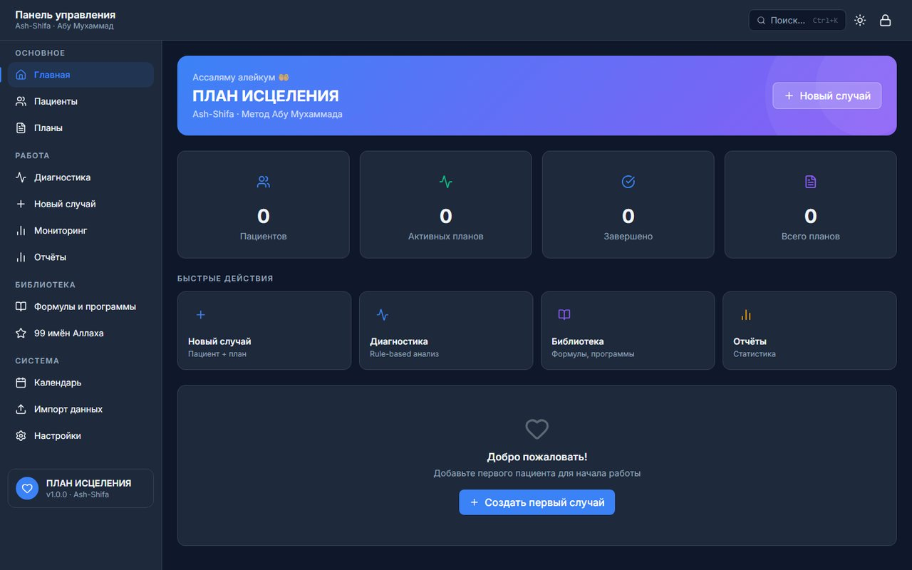

Как проходит обучение
Регистрация
Бесплатно, за минуту — email и пароль.
Читаете отрывки
Бесплатный ознакомительный кусок каждой книги — без оплаты, сразу после регистрации.
Открываете курс целиком
30 000 ₽ — пишете лекарю в Telegram, он высылает реквизиты и вручную подтверждает доступ.
Экзамен за экзаменом
Тест после каждой книги и итоговый тест по модулю — до сертификата.
Порядок необязателен — оплатить можно сразу, не дожидаясь отрывков.
Путь ученика — все 11 модулей
Экзамены и сертификат
После каждой прочитанной книги — короткий экзамен по ней самой (порог 70%), не общий тест «по всему сразу». После каждого модуля — итоговый тест. Все экзамены и их статус собраны на одной странице — «Тесты». Когда пройдены все 11 модулей, в кабинете открывается сертификат «Практик рукии» за подписью Абу Мухаммада — можно распечатать или сохранить как PDF.

Реальный интерфейс RUKYA Pro — панель управления приёмом пациентов
Что вы получите вместе с сертификатом — система RUKYA Pro
После завершения всех 11 модулей и сдачи всех экзаменов выпускник получает не только сертификат, но и рабочий инструмент для приёма настоящих пациентов: карточки пациентов, план исцеления по каждому случаю, библиотеку из проверенных по источнику формул (Коран/Сунна) и 99 имён Аллаха, автоматический разбор симптомов — как черновик для проверки, не готовое решение (окончательный диагноз всегда пишет и подписывает сам раки, см. Модуль 11). Приложение работает офлайн — данные пациентов хранятся на устройстве самого раки, не в облаке. Не продаётся и не выдаётся отдельно от курса — только тем, кто прошёл обучение полностью.
Частые вопросы
Нужна ли предыдущая подготовка?
Нет. Курс начинается с основ убеждённости (якына) — с нуля, без предварительных знаний фикха рукьи.
Можно ли начать бесплатно?
Да. Регистрация и ознакомительные отрывки всех книг курса — бесплатны, без ограничения по времени.
Как устроена оплата?
Через личные сообщения в Telegram (t.me/ruqoq) — лекарь высылает реквизиты лично и подтверждает доступ вручную после оплаты. Отдельного платёжного шлюза на сайте нет.
Сколько длится курс?
Курс самостоятельный — проходите в своём темпе, жёстких дедлайнов нет.
Можно ли пересдать экзамен?
Да, экзамен по книге и тест по модулю можно пересдавать столько раз, сколько нужно, чтобы набрать порог 70%.
Что будет после завершения курса?
Доступ к системе RUKYA Pro — там выпускник ведёт приём настоящих пациентов, лично проверяя каждый диагноз и подписывая итоговое заключение.
Как начать
Зарегистрируйтесь на сайте — сразу открыты бесплатные ознакомительные отрывки всех книг курса. Полный текст, экзамены и весь курс целиком — 30 000 ₽: напишите лекарю Абу Мухаммаду в Telegram, он вышлет реквизиты лично и подтвердит доступ.
Написать в Telegram